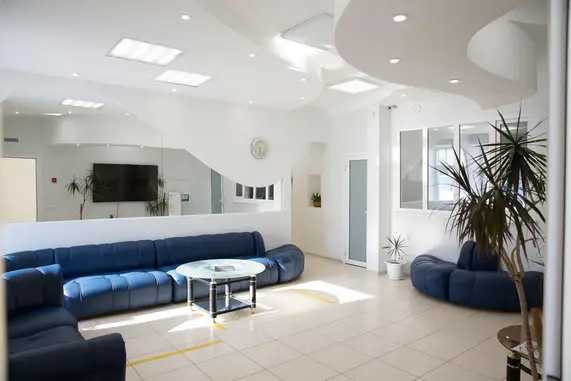
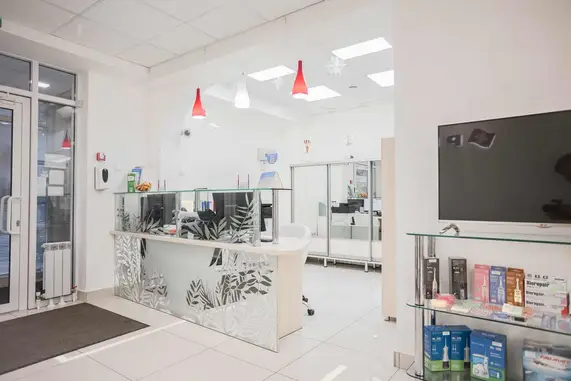

01ОДИН ЗУБ
Не хватает
одного зуба
Обсудим восстановление зуба с помощью импланта и коронки.
СТОМАТОЛОГИЯ С 1999 ГОДА
Имплантация одного
или нескольких зубов
в Набережных Челнах.
Начните с разговора с врачом.
Обсудим вашу ситуацию, варианты
и план восстановления зубов.
4,9 на Яндекс Картах и 2ГИС
По данным сайта клиники
01 / ВАША СИТУАЦИЯ
Не нужно разбираться в медицинских терминах. Расскажите, что вас беспокоит — варианты обсудим на консультации.
Обсудим восстановление зуба с помощью импланта и коронки.
Подберём план восстановления с учётом расположения отсутствующих зубов.
Врач оценит возможность установки импланта сразу после удаления зуба.
Метод и сроки лечения определяет врач после осмотра и диагностики.
ПРЕДЛОЖЕНИЕ ДО 30 СЕНТЯБРЯ 2026
При одномоментной имплантации. Возможность проведения и условия акции уточняйте на консультации.
02 / ВАШ ВРАЧ
Шарифуллин
Руслан Рушанович
Врач-стоматолог, хирург, имплантолог
«Проведу полноценную консультацию и осмотр, проанализирую результаты рентген-исследований, предложу один или несколько планов лечения».
03 / ПОНЯТНАЯ СТОИМОСТЬ
Стоимость зависит от вашей ситуации и выбранного решения. На консультации обсудим весь путь — от диагностики до коронки.
Осмотр, анализ снимков и выбор метода.
Система имплантации и хирургический этап.
Восстановление видимой части зуба.
Дополнительные процедуры, стоимость консультации и исследований уточняются до начала лечения. Состав плана определяется после диагностики.
04 / ШАГ ЗА ШАГОМ
Начать можно с консультации. Решение о лечении вы принимаете после разговора с врачом.
Врач проводит осмотр, изучает снимки и отвечает на ваши вопросы.
КОНСУЛЬТАЦИЯОбсуждаем подходящий метод, этапы, сроки и стоимость.
ВАШЕ РЕШЕНИЕПроводим лечение по согласованному плану: установка импланта и протезирование.
ЛЕЧЕНИЕВрач объясняет правила ухода и рекомендует график контрольных посещений.
НАБЛЮДЕНИЕ05 / МЕСТО, ГДЕ ВАМ РАДЫ
«Премьер» работает в Набережных Челнах с 1999 года. Приходите познакомиться с врачом, задать вопросы и обсудить то, что важно именно вам.
Пушкина, 4 — как добраться

06 / ВАЖНО ЗНАТЬ
А если не нашли свой —
задайте его на консультации.
В «Премьер» проводится одномоментная имплантация. Возможность такого лечения в вашей ситуации врач определяет после осмотра и диагностики. Запись на консультацию не означает, что операция будет проведена в тот же день.
На консультации врач оценит вашу ситуацию и предложит план. Уточните состав каждого этапа: диагностика, установка импланта, коронка и дополнительные процедуры. Стоимость первого приёма можно узнать у администратора.
Если у вас есть снимки и предыдущие планы лечения, возьмите их с собой. Администратор подскажет, что потребуется для первого визита. Заранее делать новые исследования без назначения не нужно.
На сайте клиники заявлена рассрочка под 0%. Доступность, сроки, порядок оформления и возможные ограничения уточняйте у администратора до заключения договора.
Вы можете начать со знакомства с врачом и обсуждения вариантов. Консультация помогает разобраться в ситуации; решение о дальнейших шагах остаётся за вами.
07 / НАЧНЁМ СО ЗНАКОМСТВА
Оставьте заявку на консультацию.
Обсудим вашу ситуацию и удобное время визита.
Набережные Челны
ул. Пушкина, 4 (45/05)
Пн–Пт: 08:00–20:00
Сб: 08:00–14:00